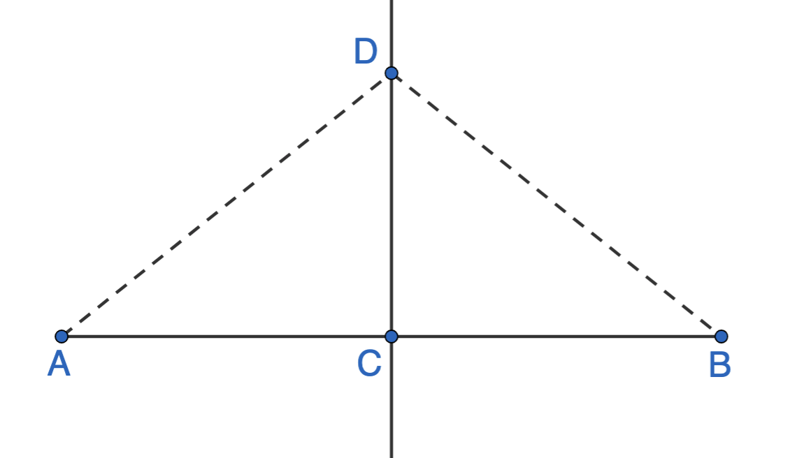

Proving the perpendicular bisector theorem
From: GeometryFundamentalsDev
Perpendicular bisector theorem: Any given point on the perpendicular bisector of a line segment is the same distance from either endpoint of the line segment.
Given: \(\overleftrightarrow{CD}\) is the perpendicular bisector for \(\overline{AB}\)
Prove: \(AD=BD\)
Proof: Match each statement with the appropriate justification in the correct order.
| Statement options | Statements | Step | Justifications | Justification options |
|---|---|---|---|---|
|
|
|
|
|